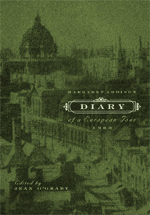

Margaret Addison was Victoria University's first Dean of Women. The diary describes a trip she took in 1900, interspersed with commentary that brings out the significance of this visit of a new-world educator to the old.
Margaret Addison's description of her Paris hotel:
Cook's Exposition Hotel was an exposition in itself. The architecture was on the principle of most rooms out of smallest space, and on smallest expense. There were sections A, B, C, D, E & F; each had its own entrance, and if you were in F, as we were, you had to travel down a street in the burning sun till you reached the entrance where began the stairs. This ascended three sides of a square, and we were six flights up! . . .
When I came to climb so many stairs, I asked if there were not an elevator. The porter said oui, oui, and led me to a small room with W.C. over it. Imagine my feelings. No--not a lift, or elevatoire, or ascenseur, but every day six flights up and the same down.
Margaret Addison had been a question mark at the back of my mind ever since I lived in Margaret Addison Hall (1961-63) as an undergraduate at Victoria College. Years later, casting about in the Victoria archives, I came across a diary she had written which, it seemed to me, gave a vivid sense of what it was like to be a woman in 1900, consciously hesitating on the brink of a new era.
Understanding the diary involved research into such topics as the English women's colleges, the teaching of domestic science, work among London's poor, and the Boer War, which are written up in “chapter” introductions to provide context for what Addison says.